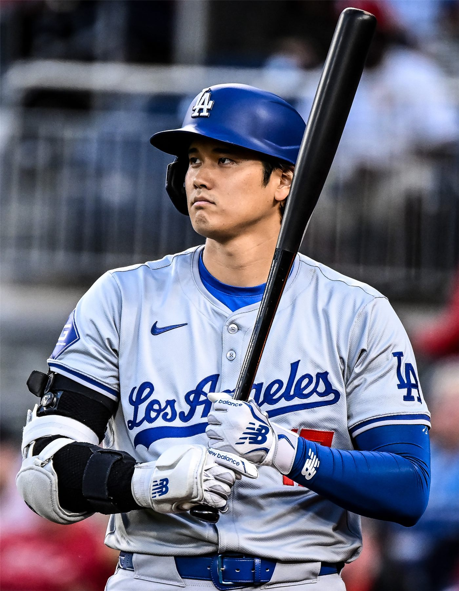

오타니 올 시즌 투구 복귀 사실상 어려워… 다저스 감독 "지난주 투구 0구"
오타니 쇼헤이의 올 시즌 마운드 복귀가 사실상 어려워졌다는 관측이 나온다. 다저스 감독은 지난주 투구 수가 사실상 없었다는 취지로 상황을 설명했다.
전홍발 기자 · 2026.09.13
橋경제·문화·스포츠

오타니 쇼헤이의 올 시즌 투수 복귀가 사실상 어려워졌다는 관측이 대만 연합보 등을 통해 전해졌다. 로스앤젤레스 다저스 감독은 지난주 그의 투구 수가 사실상 없는 수준이었다는 취지로 상황을 설명했다.
광고 문의 · 300×250투수의 복귀 과정은 통상 캐치볼, 불펜 투구, 라이브 배팅 피칭, 실전 등판의 단계를 거친다. 각 단계 사이에는 회복 상태를 확인하는 기간이 필요해, 단계를 건너뛰는 일은 드물다.
시즌 잔여 일정이 줄어들수록 복귀 창은 좁아진다. 남은 경기 수가 단계별 준비 기간을 감당하지 못하면, 무리한 등판보다 다음 시즌 준비로 방향을 트는 결정이 일반적이다.
타자로서의 출전은 별도의 문제다. 투타 겸업 선수의 경우 타격 출전을 유지하면서 투구 준비를 병행하는 사례가 있어 왔으나, 팔 부하 관리라는 제약이 함께 따른다.
아시아 야구 팬들에게 이 사안이 갖는 의미는 개인 기록을 넘어선다. 투타 겸업이라는 방식이 장기적으로 지속 가능한지에 대한 판단 재료가 축적되고 있기 때문이다.
다음 확인 지점은 팀의 공식 발표다. 구단이 시즌 종료 후 재활 일정과 내년 계획을 어떤 표현으로 밝히는지가, 실제 상태를 가늠하는 단서가 된다.
출처·참고 (사실 확인용 — 본문은 직접 재작성)
· https://udn.com/news/index
· https://udn.com/news/index